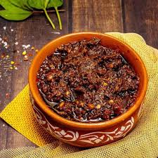

Ingredients:
- 2 cups gongura leaves (sorrel leaves)
- 2 tbsp mustard seeds
- 1 tbsp fenugreek seeds (methi)
- 2 tbsp red chili powder
- 1 tbsp turmeric powder
- 4-5 garlic cloves (chopped)
- 2 tbsp salt (adjust to taste)
- ½ cup sesame oil (or mustard oil)
- 2 dried red chilies

Instructions:
Prepare the Leaves –
Wash and dry the gongura leaves completely, then sauté them in a pan (without oil) until they soften.
Roast & Grind Spices –
Dry roast mustard seeds, fenugreek seeds, and dried red chilies, then grind them into a coarse powder.
Cook with Spices –
Heat sesame oil, add garlic, then add cooked gongura leaves, chili powder, turmeric, salt, and the ground spice mix.
Cook Until Oil Separates –
Stir and cook the mixture on low flame until the oil separates and the pickle thickens.Cool & Store –
Once cooled, transfer to a sterilized jar and let it sit for a day before using for better flavor.
కావలసినవిః
- 2 కప్పులు గోంగూర ఆకులు
- 2 టేబుల్ స్పూన్లు ఆవాలు
- 1 టేబుల్ స్పూన్ మెంతి గింజలు
- 2 టేబుల్ స్పూన్లు ఎర్ర మిరప పొడి
- 1 టేబుల్ స్పూన్ పసుపు పొడి
- 4-5 వెల్లుల్లి రెబ్బలు (తరిగిన)
- 2 టేబుల్ స్పూన్లు ఉప్పు (రుచికి సర్దుబాటు చేయండి)
- ½ కప్పు నువ్వుల నూనె
- 2 ఎండిన ఎర్ర మిరపకాయలు
ఆకులను సిద్ధం చేయండి -
గోంగూర ఆకులను పూర్తిగా కడిగి ఆరబెట్టండి, ఆపై వాటిని మెత్తబడే వరకు పాన్లో (నూనె లేకుండా) వేయించాలి రోస్ట్ & గ్రైండ్ మసాలాలు -
ఆవాలు, మెంతి గింజలు మరియు ఎండిన ఎర్ర మిరపకాయలను పొడిగా కాల్చండి, ఆపై వాటిని ముతక పొడిగా రుబ్బుకోవాలి మసాలా దినుసులతో ఉడికించాలి -
నువ్వుల నూనెను వేడి చేసి, వెల్లుల్లి వేసి, ఆపై ఉడికించిన గోంగూర ఆకులు, కారం, పసుపు, ఉప్పు, మరియు గ్రౌండ్ మసాలా మిక్స్ జోడించండి నూనె విడిపోయే వరకు ఉడికించాలి -
నూనె వేరు మరియు ఊరగాయ చిక్కబడే వరకు మిశ్రమాన్ని తక్కువ మంట మీద కలపండి. కూల్ & స్టోర్ -
చల్లబడిన తర్వాత, స్టెరిలైజ్ చేసిన కూజాకు బదిలీ చేయండి మరియు మంచి రుచి కోసం ఉపయోగించే ముందు ఒక రోజు పాటు ఉంచండి.